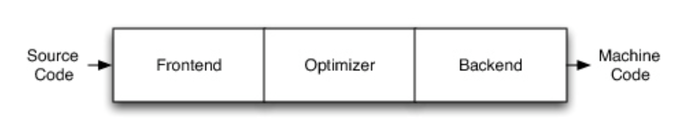
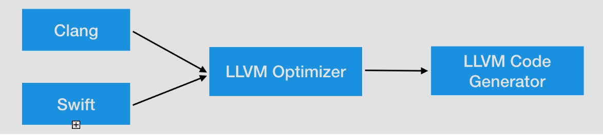
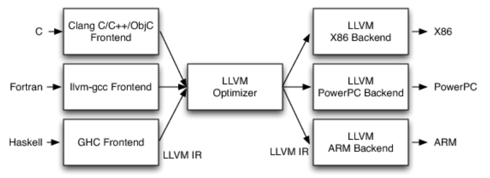
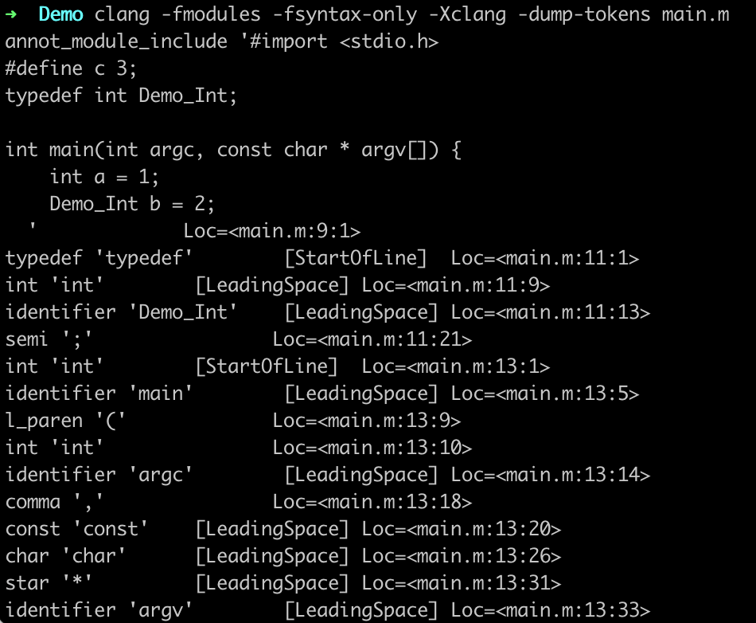
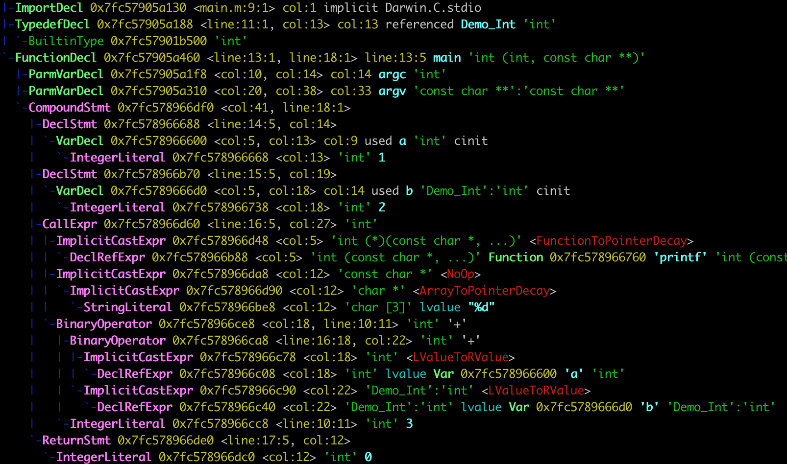
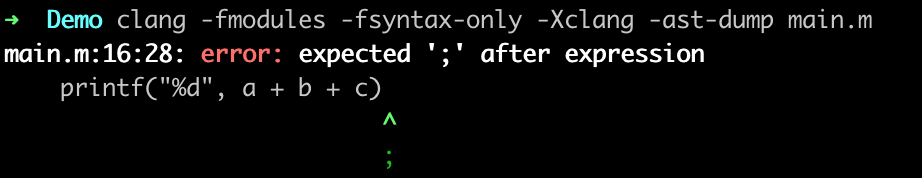
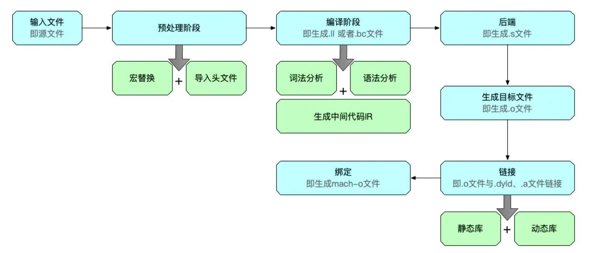

LLVM
LLVM是架构编译器的框架系统，以C++编写而成，用于优化任意程序语言编写的程序的编译时间（compile-time）、链接时间（link-time）、运行时间（run-time）以及空闲时间（idle-time）。对开发者保持开放，并兼容已有脚本。
传统编译器设计
源码Source Code + 前端Frontend + 优化器Optimizer + 后端Backend（代码生成器 CodeGenerator）+ 机器码Machine Code，如下图所示

前端Frontend：编译器前端的任务是解析源代码（编译阶段），它会进行 词法分析、语法分析、语义分析、检查源代码是否存在错误，然后构建抽象语法树（Abstract Syntax Tree AST），LLVM的前端还会生成中间代码（intermediate representation，简称IR），可以理解为llvm是编译器 + 优化器， 接收的是IR中间代码，输出的还是IR，给后端，经过后端翻译成目标指令集。
优化器 Optimizer：优化器负责进行各种优化，改善代码的运行时间，例如消除冗余计算等。
后端Backend（代码生成器 Code Generator）：将代码映射到目标指令集，生成机器代码，并且进行机器代码相关的代码优化。
iOS的编译架构
OC、C、C++使用的编译器前端是Clang，Swift是swift，后端都是LLVM。

LLVM的设计
当编译器决定支持多种源语言或者多种硬件架构时，LLVM最重要的地方就来了。其他的编译器如GCC，他们都非常成功，但是由于它是作为整体应用程序设计的，因此他们的用途受到了很大的限制。
LLVM设计的最重要方面是，使用通用的代码表示形式（IR），它是用来在编译器中表示代码的形式，所有LLVM可以为任何编程语言独立编写前端，并且可以为任意硬件架构独立编写后端。

LLVM的设计是前后端分离的，无论前端还是后端发生变化，都不会影响另一个。
Clang简介
clang是LLVM项目中的一个子项目，它是基于LLVM架构图的轻量级编译器，诞生之初是为了替代GCC，提供更快的编译速度，它是负责C、C++、OC语言的编译器，属于整个LLVM架构中的 编译器前端，对于开发者来说，研究Clang可以给我们带来很多好处。
编译流程
创建一个工程，在main.m中添加代码：
1
2
3
4
5
6
7
8
9
| #define c 3
typedef int Demo_Int;
int main(int argc, const char * argv[]) {
int a = 1;
Demo_Int b = 2;
printf("%d", a + b + c);
return 0;
}
|
我们通过命令可以打印源码的编译流程
1
| $ clang -ccc-print-phases main.m
|
流程如下：
1
2
3
4
5
6
7
8
9
10
11
12
13
14
15
16
17
18
19
20
| 输入文件：找到源文件
+- 0: input, "main.m", objective-c
预处理阶段：这个过程处理包括宏的替换，头文件的导入
+- 1: preprocessor, {0}, objective-c-cpp-output
编译阶段：进行词法分析、语法分析、检测语法是否正确，最终生成IR
+- 2: compiler, {1}, ir
后端：这里LLVM会通过一个一个的pass去优化，每个pass做一些事情，最终生成汇编代码
+- 3: backend, {2}, assembler
汇编代码生成目标文件
+- 4: assembler, {3}, object
链接：一个个"xxx.0"文件链接起来，再链接需要的动态库和静态库，生成可执行文件
+- 5: linker, {4}, image（镜像文件）
绑定：通过不同的架构，生成对应的可执行文件
6: bind-arch, "x86_64", {5}, image
|
预处理阶段
预处理主要是处理：
- 头文件导入
- 宏定义，替换宏
- 比如上方定义的
#define c 3，预处理后，不会看到c直接会用3替代。
通过命令可以查看预处理后的结果：
1
2
3
4
5
| // 在终端直接查看预处理的结果
$ clang -E main.m
// 把预处理的结果输出到main2.m文件中
$ clang -E main.m >> main2.m
|
编译之后的主要代码如下，删除很多头文件的引入：
1
2
3
4
5
6
7
8
9
10
| ...
typedef int Demo_Int;
int main(int argc, const char * argv[]) {
int a = 1;
Demo_Int b = 2;
printf("%d", a + b + 3;);
return 0;
}
|
- typedef 处理类型别名时，在预处理阶段
不会被替换掉。
- #define 在预处理阶段
会被替换掉。在逆向工程中，通常会被用来进行代码混淆，将核心方法等使用系统相似的名称，来达到代码混淆的目的，使代码更安全。
编译阶段
由词法分析、语法分析、生成中级代码IR等组成。
词法分析
预处理完成后就会进行词法分析，这里会把代码切成一个个token，比如大小括号、等号、字符串、关键词等。
1
| $ clang -fmodules -fsyntax-only -Xclang -dump-tokens main.m
|

1
2
3
4
5
6
7
| // StartOfLine：main.m文件中，第11行，第1个字符开始，是'typedef'
typedef 'typedef' [StartOfLine] Loc=<main.m:11:1>
// LeadingSpace： main.m文件中，第11行，从第9个字符开始
int 'int' [LeadingSpace] Loc=<main.m:11:9>
identifier 'Demo_Int' [LeadingSpace] Loc=<main.m:11:13>
// 符号";"，从main.m的第11行，21个字符开始
semi ';' Loc=<main.m:11:21>
|
如果代码中有书写错误，在词法分析时不会报错。
语法分析
词法分析完成后就是语法分析，它的任务是验证语法是否正确，在词法分析的基础上将单词序列组合成各类此法短语，如程序、语句、表达式 等等，然后将所有节点组成抽象语法树（Abstract Syntax Tree = AST），语法分析判断程序在结构上是否正确。
1
| $ clang -fmodules -fsyntax-only -Xclang -ast-dump main.m
|
如果导入头文件找不到，可以指定SDK
1
2
3
4
| $ clang -isysroot (自己Xcode下对应SDK路径) -fmodules -fsyntax-only -Xclang -ast-dump main.m
$ clang -isysroot /Applications/Xcode.app/Contents/Developer/Platforms/iPhoneSimulator.platform/Developer/SDKs/iPhoneSimulator14.3.sdk/ -fmodules -fsyntax-only -Xclang -ast-dump main.m
|
这是截取了语法分析中的一部分：

这是严格的按照语法进行处理的，从代码的对齐上可以看出点东西来。
1
2
3
4
5
6
7
8
9
10
11
12
13
14
15
16
17
18
19
20
21
22
23
24
25
26
27
28
29
30
31
32
33
34
35
36
37
38
39
40
41
| // 头文件引入 stdio
ImportDecl 0x7fc57905a130 <main.m:9:1> col:1 implicit Darwin.C.stdio
// typedef int Demo_Int;
|-TypedefDecl 0x7fc57905a188 <line:11:1, col:13> col:13 referenced Demo_Int 'int'
| `-BuiltinType 0x7fc57901b500 'int'
// 定义了一个方法main，从13行的第1个字符开始到第18行第1个字符结束，返回int类型，有两个参数int和char **
FunctionDecl 0x7fc57905a460 <line:13:1, line:18:1> line:13:5 main 'int (int, const char **)'
// 第1个参数为int 类型，参数名是argc
|-ParmVarDecl 0x7fc57905a1f8 <col:10, col:14> col:14 argc 'int'
// 第2个参数为char ** 类型，参数名是argv
|-ParmVarDecl 0x7fc57905a310 <col:20, col:38> col:33 argv 'const char **':'const char **'
// 函数的内容范围，从第13行第41个字符开始到第18行第1个字符结束，也就是两个大括号的位置，也就是函数的作用域
`-CompoundStmt 0x7fc578966df0 <col:41, line:18:1>
// 声明局部变量
|-DeclStmt 0x7fc578966688 <line:14:5, col:14>
// 局部变量为a，类型为int
| `-VarDecl 0x7fc578966600 <col:5, col:13> col:9 used a 'int' cinit
// 局部变量a的值为1
| `-IntegerLiteral 0x7fc578966668 <col:13> 'int' 1
|-DeclStmt 0x7fc578966b70 <line:15:5, col:19>
| `-VarDecl 0x7fc5789666d0 <col:5, col:18> col:14 used b 'Demo_Int':'int' cinit
| `-IntegerLiteral 0x7fc578966738 <col:18> 'int' 2
// 调用了函数方法，返回int类型
|-CallExpr 0x7fc578966d60 <line:16:5, col:27> 'int'
// 隐式转换
| |-ImplicitCastExpr 0x7fc578966d48 <col:5> 'int (*)(const char *, ...)' <FunctionToPointerDecay>
| | `-DeclRefExpr 0x7fc578966b88 <col:5> 'int (const char *, ...)' Function 0x7fc578966760 'printf' 'int (const char *, ...)'
| |-ImplicitCastExpr 0x7fc578966da8 <col:12> 'const char *' <NoOp>
| | `-ImplicitCastExpr 0x7fc578966d90 <col:12> 'char *' <ArrayToPointerDecay>
// 对应的string类型转化为char[]类型，
| | `-StringLiteral 0x7fc578966be8 <col:12> 'char [3]' lvalue "%d"
// 运算表达式
| `-BinaryOperator 0x7fc578966ce8 <col:18, line:10:11> 'int' '+'
| |-BinaryOperator 0x7fc578966ca8 <line:16:18, col:22> 'int' '+'
| | |-ImplicitCastExpr 0x7fc578966c78 <col:18> 'int' <LValueToRValue>
| | | `-DeclRefExpr 0x7fc578966c08 <col:18> 'int' lvalue Var 0x7fc578966600 'a' 'int'
| | `-ImplicitCastExpr 0x7fc578966c90 <col:22> 'Demo_Int':'int' <LValueToRValue>
| | `-DeclRefExpr 0x7fc578966c40 <col:22> 'Demo_Int':'int' lvalue Var 0x7fc5789666d0 'b' 'Demo_Int':'int'
| `-IntegerLiteral 0x7fc578966cc8 <line:10:11> 'int' 3
`-ReturnStmt 0x7fc578966de0 <line:17:5, col:12>
`-IntegerLiteral 0x7fc578966dc0 <col:12> 'int' 0
|
CompoundStmt：函数的作用域，大括号的开始与结束{}
DeclStmt：局部变量声明
CallExpr：函数调用
BinaryOperator：运算表达式
AST语法树关键字解析
AST抽象语法树
如果当我们写的代码有问题时，在编译阶段就会出现问题，比如我们在上面的代码中删除一个分号，再运行一下命令。

在语法分析阶段就会把错误清晰的暴露出来。
生成中级代码IR
完成以上步骤后，就开始生成中间代码IR了，代码生成器（Code Generation）会将语法树自顶向下遍历逐步翻译成LLVM IR。
可以通过下面命令生成xx.ll的文本文件，也就是IR代码。
1
2
3
4
5
6
| // 默认不优化
$ clang -S -fobjc-arc -emit-llvm main.m
// IR文件的优化，在Xcode中target - build setting -optimization level可以设置。
// LLVM的优化登记分别为 -O0、 -O1 、-O2、-O3、-Os（第一个字母为大写O）
clang -Os -S -fobjc-arc -emit-llvm main.m -o main.ll
|
以下是IR的基本语法：
1
2
3
4
5
6
7
8
9
| @ 全局标识
% 局部标识
alloca 开辟空间
align 内存对齐
i32 32bit，4个字节
store 写入内存
load 读取数据
call 调用函数
ret 返回
|
编译之后的IR代码如下：
1
2
3
4
5
6
7
8
9
10
11
12
13
14
15
16
17
18
| define i32 @main(i32 %0, i8** %1) #0 {
%3 = alloca i32, align 4
%4 = alloca i32, align 4
%5 = alloca i8**, align 8
%6 = alloca i32, align 4
%7 = alloca i32, align 4
store i32 0, i32* %3, align 4
store i32 %0, i32* %4, align 4
store i8** %1, i8*** %5, align 8
store i32 1, i32* %6, align 4
store i32 2, i32* %7, align 4
%8 = load i32, i32* %6, align 4
%9 = load i32, i32* %7, align 4
%10 = add nsw i32 %8, %9
%11 = add nsw i32 %10, 3
%12 = call i32 (i8*, ...) @printf(i8* getelementptr inbounds ([3 x i8], [3 x i8]* @.str, i64 0, i64 0), i32 %11)
ret i32 0
}
|
优化后生成的代码就不放了，自己看吧。
bitcode
在Xcode7以后，开启了bitcode，苹果会做进一步的优化，生成.bc的中间代码。
1
| $ clang -emit-llvm -c main.ll -o main.bc
|
后端
LLVM在后端主要是会通过一个个的Pass去优化，每个Pass做一些事情，最终生成汇编代码。
按照整个llvm的流程，是通过.ll文件生成汇编文件：
1
| $ clang -S -fobjc-arc main.ll -o main.s
|
我们也可以直接使用源文件生成汇编代码：
1
| $ clang -Os -S -fobjc-arc main.m -o main.s
|
这里需要注意的是，在上一步中优化后得到的汇编代码与直接使用优化得到的汇编代码是一样的。
生成目标文件
目标文件的生成，是汇编器以汇编代码作为插入，将汇编代码转换为机器代码，最后输出目标文件（object file），.o结尾。
1
| clang -fmodules -c main.s -o main.o
|
接下来我们看看.o文件中有哪些内容(main.o的符号)：
输出的结果为：
1
2
3
4
| $ nm -nm main.o
(undefined) external _printf
0000000000000000 (__TEXT,__text) external _test
000000000000000a (__TEXT,__text) external _main
|
_printf函数是一个是undefined、external类型的：
undefined：表示在当前文件暂时找不到符号_printf。external：表示这个符号是外部可以访问的。
之所以找不到，是因为没有运行，有一些动态库、静态库是需要在运行时才被链接进来的。一堆堆的.o文件，链接起来，最后生成我们的可以执行文件。
链接
连接器把编译生成的.o文件和.dyld、·.a·文件链接，生成一个mach-o文件。
其中，静态库和可执行文件合并，动态库是独立的（系统的动态库可以让所有mach-o访问的）。
接下来看一下生成的可执行文件main的符号：
1
2
3
4
5
6
7
| $ nm -nm main
(undefined) external _printf (from libSystem)
(undefined) external dyld_stub_binder (from libSystem)
0000000100000000 (__TEXT,__text) [referenced dynamically] external __mh_execute_header
0000000100003f6d (__TEXT,__text) external _test
0000000100003f77 (__TEXT,__text) external _main
0000000100008008 (__DATA,__data) non-external __dyld_private
|
可以看到，把dyld相关的库已经链接到可执行文件中了。
这个时候可以直接运行这个可执行文件：
直接可以输出结果。
绑定
通过不同的架构，生成对应的mach-o格式的可执行文件。
我们可以直接通过file命令查看可执行文件的类型：
1
2
| $ file main
main: Mach-O 64-bit executable x86_64
|
总结

clang插件
引用
AST语法树关键字解析
AST抽象语法树